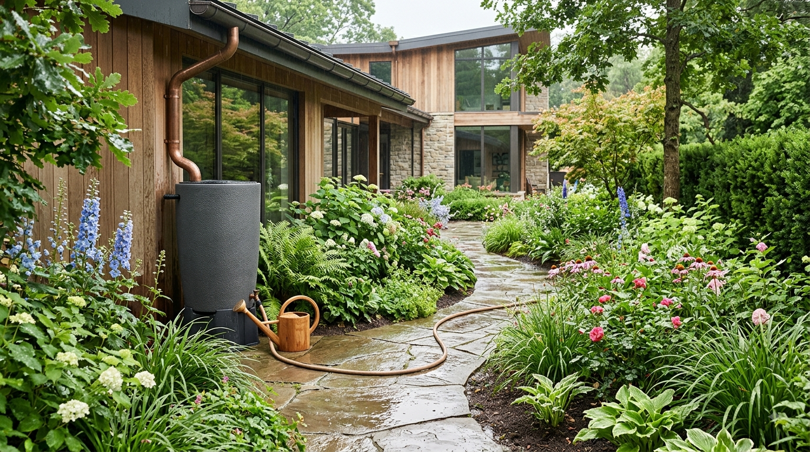
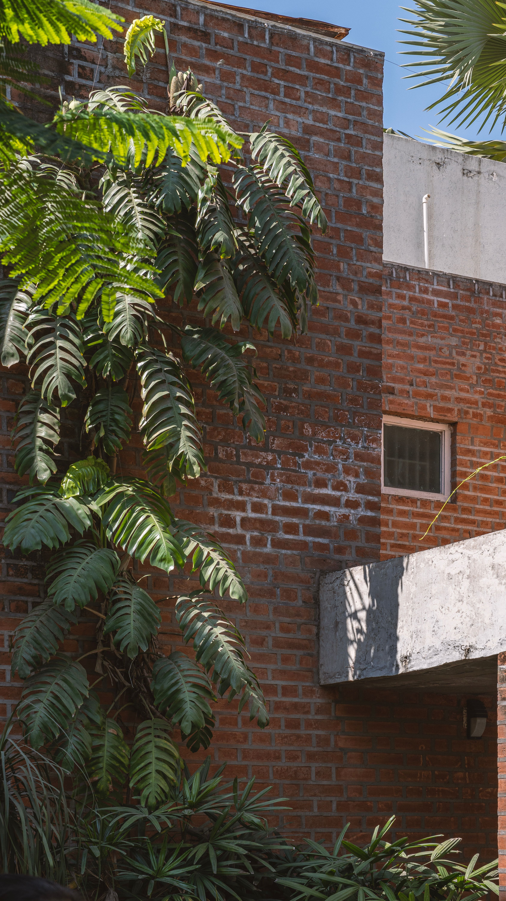
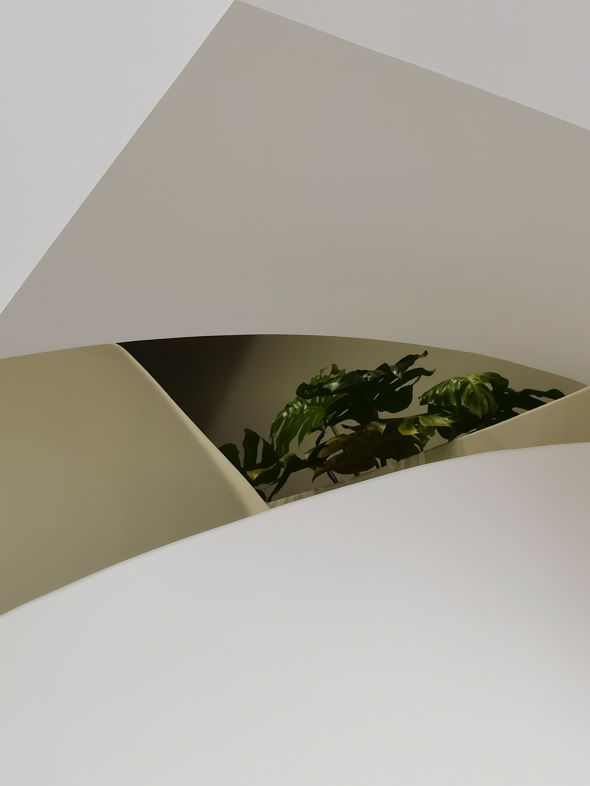

En este artículo
Mantén despejadas las ventanas
Una de las formas más sencillas de aprovechar la luz natural consiste en evitar colocar objetos voluminosos delante de las ventanas.
Plantas, muebles y elementos decorativos pueden formar parte de la habitación, pero conviene observar si están bloqueando una cantidad importante de luz.
Mantén las entradas de luz limpias y despejadas
Las ventanas son la principal entrada de luz natural, por lo que conviene mantener limpios los cristales y los marcos. Una capa de polvo puede parecer insignificante, pero cuando se acumula reduce la claridad y hace que la habitación parezca más apagada. Una limpieza periódica permite aprovechar mejor la iluminación disponible.
También es importante revisar qué elementos están delante de la ventana. Plantas grandes, muebles altos o acumulaciones de objetos pueden bloquear parte de la luz. Si necesitas colocar muebles cerca, intenta elegir piezas bajas o ubicarlas lateralmente para que la entrada de luz permanezca libre.
En ventanas con orientación especialmente luminosa, la solución no consiste en bloquear completamente el sol. Es preferible controlar la intensidad mediante cortinas ligeras, persianas regulables o textiles que permitan adaptar el ambiente a diferentes horas del día.
Observa la orientación y los cambios durante el día
La cantidad de luz que entra por una ventana cambia según la orientación, la estación y la hora. Por eso, una solución que parece perfecta por la mañana puede necesitar ajustes por la tarde. Observar estos cambios durante algunos días permite decidir mejor dónde colocar muebles, plantas y zonas de trabajo.
En habitaciones muy soleadas, controlar la entrada de luz también ayuda a proteger determinados materiales. Maderas, textiles y algunos objetos decorativos pueden deteriorarse con una exposición intensa y prolongada. Regular el sol mediante cortinas o persianas permite disfrutar de la claridad sin descuidar el mantenimiento del ambiente.
Elige bien las cortinas
Las cortinas permiten controlar la entrada de luz y también forman parte de la decoración. En habitaciones donde se busca aprovechar al máximo la iluminación natural, los tejidos ligeros pueden ser una opción interesante.

También puedes combinar diferentes capas para adaptar la cantidad de luz a distintos momentos del día.
Elige textiles que permitan regular la iluminación
Las cortinas tienen una función decorativa, pero también modifican la cantidad y la calidad de luz que entra en una habitación. Los tejidos ligeros y translúcidos pueden filtrar la intensidad del exterior sin oscurecer completamente el ambiente. Son especialmente útiles en salones, dormitorios y zonas de trabajo.
La forma de instalar las cortinas también importa. Colocar la barra algo más alta y ancha que la ventana permite recoger el tejido hacia los laterales y dejar una mayor superficie de cristal libre. Cuando el espacio lo permite, esta solución puede mejorar la sensación de amplitud.
En habitaciones donde se necesita privacidad, puede combinarse una capa ligera con otra más opaca para la noche. Así se mantiene la posibilidad de aprovechar la luz durante el día sin sacrificar comodidad cuando se necesita oscuridad.
Adapta la protección a cada habitación
Un dormitorio puede necesitar mayor control de la luz para facilitar el descanso, mientras que una cocina o un salón puede beneficiarse de una tela más ligera. No existe una única cortina ideal para toda la vivienda. La elección debe responder a la orientación, la privacidad y la actividad que se realiza en cada espacio.
También es recomendable mantener los textiles limpios. El polvo acumulado en cortinas y persianas puede afectar la sensación de frescura del ambiente. Un mantenimiento sencillo y periódico ayuda a conservar tanto la apariencia como la capacidad de dejar pasar la luz.
Distribuye los muebles estratégicamente
La posición de los muebles puede influir en la forma en que se percibe la luz dentro de una habitación.
Evita bloquear las entradas de luz
Los muebles altos colocados delante de ventanas pueden reducir la entrada de luz y hacer que determinadas zonas parezcan más oscuras.

Siempre que la distribución lo permita, intenta mantener las principales entradas de luz relativamente despejadas.
Distribuye los muebles para acompañar la entrada de luz
La posición de los muebles puede determinar si la luz llega a toda la habitación o queda concentrada cerca de la ventana. Evita crear una barrera con armarios altos o estanterías profundas. Los elementos de mayor volumen suelen funcionar mejor en paredes que no bloqueen las principales entradas de iluminación.
Los espejos pueden ayudar a repartir visualmente la claridad cuando se colocan de forma estratégica. No es necesario cubrir las paredes con ellos: uno bien situado frente o cerca de una fuente de luz puede ampliar la sensación de profundidad y reflejar parte de la iluminación hacia zonas menos favorecidas.
También conviene pensar en la función de cada zona. Un escritorio cerca de una ventana puede beneficiarse de la iluminación natural, mientras que un televisor colocado directamente frente a ella puede generar reflejos. La distribución debe equilibrar comodidad, visibilidad y aprovechamiento de la luz.
Evita crear zonas de sombra innecesarias
Los muebles altos colocados cerca de una ventana pueden proyectar sombras sobre otras superficies. Cuando sea posible, utiliza piezas bajas en las áreas próximas a las fuentes de luz y reserva los muebles de mayor altura para paredes menos favorecidas. Esta decisión puede mejorar la distribución de la claridad sin modificar la estructura de la vivienda.
En un espacio de trabajo, además, es importante evitar que la posición del escritorio produzca reflejos en una pantalla. La mejor orientación dependerá de la ventana y de la hora del día. Probar diferentes posiciones antes de fijar definitivamente el mobiliario puede ahorrar molestias posteriores.
Utiliza superficies que reflejen la luz
Algunas superficies claras pueden ayudar a distribuir visualmente la luz por la habitación. Paredes, muebles y determinados elementos decorativos pueden contribuir a crear una sensación más luminosa.
- Utiliza colores claros cuando encajen con el estilo del espacio.
- Mantén limpias las superficies cercanas a las ventanas.
- Evita saturar las zonas que reciben luz directa.
- Utiliza espejos de forma estratégica cuando resulten adecuados.
Utiliza colores y superficies que ayuden a repartir la claridad
Las paredes claras suelen reflejar más luz que las superficies muy oscuras, por lo que pueden ayudar a distribuir la iluminación por el ambiente. Los tonos crema, arena, blanco roto y otros colores suaves ofrecen alternativas cálidas sin necesidad de convertir toda la decoración en un espacio completamente blanco.

Los acabados también influyen. Superficies ligeramente satinadas pueden reflejar la luz de manera agradable, mientras que demasiados acabados brillantes pueden producir reflejos incómodos. El objetivo es conseguir una distribución equilibrada, no convertir cada superficie en un espejo.
Finalmente, evita acumular objetos que absorban visualmente la luz en las zonas más luminosas. Una decoración bien seleccionada, combinada con textiles y materiales de diferentes texturas, puede mantener el carácter del ambiente mientras aprovecha mejor la iluminación natural.
Combina claridad con personalidad
Aprovechar la luz natural no obliga a eliminar los colores intensos. Puedes mantener paredes o muebles con carácter y reservar las superficies más claras para zonas estratégicas. Un techo claro, por ejemplo, puede ayudar a distribuir la luminosidad sin cambiar completamente la paleta decorativa.
Los textiles también pueden colaborar. Alfombras, cortinas y tapizados en tonos suaves pueden contribuir a una sensación más luminosa, mientras que pequeños elementos oscuros aportan contraste. El equilibrio permite aprovechar la claridad sin que la habitación pierda profundidad o personalidad.
Consejos finales para mantener el resultado
Antes de realizar cambios importantes, observa durante varios días cómo se comporta la luz en cada habitación. Anota qué zonas reciben claridad directa, cuáles permanecen más oscuras y en qué momentos aparecen reflejos. Esta observación permite distribuir mejor los usos de cada espacio y evitar decisiones que después resulten incómodas. También es conveniente combinar la luz natural con una iluminación artificial bien planificada. El objetivo no es depender exclusivamente del sol, sino reducir la necesidad de iluminación artificial durante las horas en que existe suficiente claridad y disponer de una alternativa cómoda cuando esta disminuye. Mantener las ventanas, cortinas y superficies limpias completa el trabajo. En viviendas donde la luz es limitada, los pequeños cambios tienen especial importancia: retirar un objeto que bloquea una ventana, aclarar una pared o mover una estantería puede mejorar la percepción del ambiente sin necesidad de obras. Finalmente, recuerda que la luz debe adaptarse a las personas. Un espacio muy luminoso no siempre es más confortable; la posibilidad de regular la intensidad y protegerse del exceso de sol también forma parte de un buen diseño interior.
Una revisión periódica también permite detectar cambios que afectan a la iluminación, como muebles nuevos, plantas que han crecido o textiles que bloquean parte de las ventanas. Mantener despejadas las entradas de luz y adaptar la decoración a las condiciones reales ayuda a conservar el beneficio durante todo el año.
Así, la iluminación seguirá acompañando las necesidades reales de la vivienda.
Preguntas frecuentes
¿Las cortinas deben ser siempre claras para aprovechar la luz natural?
No necesariamente. Los tejidos claros y translúcidos suelen facilitar la entrada de luz, pero la elección debe adaptarse a la orientación de la ventana, la privacidad y el control del sol. Una combinación de capas permite regular el ambiente según la hora del día.
¿Dónde conviene colocar un espejo para aprovechar mejor la claridad?
Un espejo colocado cerca o frente a una fuente de luz puede ayudar a reflejarla hacia otras partes de la habitación. No es necesario cubrir una pared completa; lo importante es elegir una posición que aporte profundidad sin generar reflejos molestos.
¿La luz natural puede sustituir completamente a la iluminación artificial?
Durante algunas horas puede reducir mucho la necesidad de iluminación artificial, pero siempre conviene contar con una fuente adecuada para la tarde, la noche o los días con poca claridad.
Conclusión
Aprovechar la luz natural no significa cambiar completamente la decoración de una casa. Muchas veces, pequeños ajustes en la distribución y en los elementos que rodean las ventanas pueden marcar una diferencia.
Observa cómo entra la luz durante el día y utiliza esa información para organizar cada habitación de una manera más funcional.
Aprovechar la luz natural es, sobre todo, una cuestión de observar cómo entra la iluminación y evitar obstáculos innecesarios. Ventanas limpias, cortinas adecuadas, muebles bien colocados y superficies que ayuden a repartir la claridad pueden mejorar notablemente cualquier habitación. Además de favorecer una sensación de amplitud y bienestar, estas decisiones pueden reducir el uso de iluminación artificial durante el día. Lo importante es adaptar cada solución a la orientación, las necesidades de privacidad y la forma en que se utiliza el espacio.